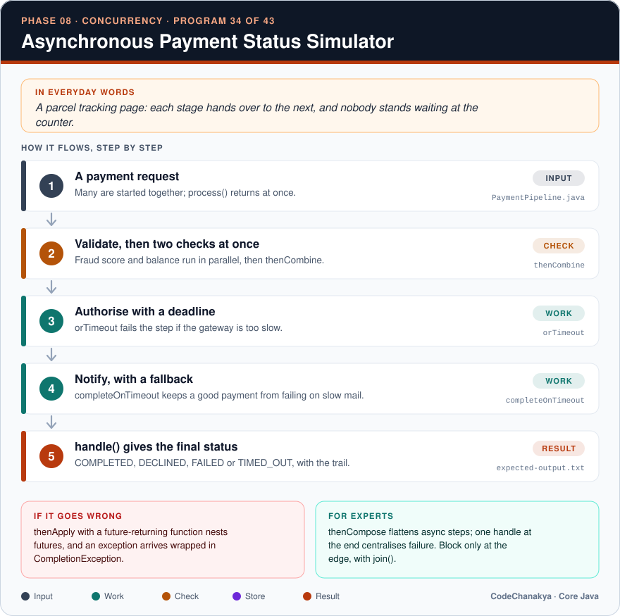

Phase 08 · Concurrency · Program 34 of 43
Asynchronous Payment Status Simulator
The problem
A payment service validates, checks fraud and funds, calls an outside gateway and notifies the customer. Several steps wait on other services, and a thread per waiting payment would need thousands of threads.
This Phase 8 project describes each payment as a chain of steps that run when the previous one finishes. Fraud and balance checks run in parallel, the gateway has a deadline, a slow mail server cannot fail a good payment, and one handle() at the end turns every outcome into a status.
See the flow
The whole program as one picture. Read it top to bottom; the colour of each card says what kind of step it is.


If you are new to coding
A parcel tracking page: each stage hands over to the next, and nobody stands waiting at the counter.
If you are learning
Follow the numbered cards from top to bottom. Open the file named on each card, run the program, and match its output to the last card.
If you are experienced
thenCompose flattens async steps; one handle at the end centralises failure. Block only at the edge, with join().
Text version of the flow
- A payment request (input): Many are started together; process() returns at once.
- Validate, then two checks at once (check): Fraud score and balance run in parallel, then thenCombine.
- Authorise with a deadline (work): orTimeout fails the step if the gateway is too slow.
- Notify, with a fallback (work): completeOnTimeout keeps a good payment from failing on slow mail.
- handle() gives the final status (result): COMPLETED, DECLINED, FAILED or TIMED_OUT, with the trail.
Read in this order
- 1Status.java, PaymentRequest.java, PaymentResult.javaAn enum and two records.
- 2The four service classesEach returns a CompletableFuture.
- 3PaymentPipeline.javaThe chain. The file to study.
- 4Retry.java, PaymentSystem.javaA recursive retry and the shared daemon pool.
The code
package com.codechanakya.asyncpay; import java.util.List; import java.util.concurrent.CompletableFuture; import java.util.concurrent.CompletionException; import java.util.concurrent.CopyOnWriteArrayList; import java.util.concurrent.Executor; import java.util.concurrent.ExecutionException; import java.util.concurrent.TimeUnit; import java.util.concurrent.TimeoutException; /** * One payment's journey, written as a chain of steps that run when the previous one finishes. * * <pre> * validate -> ( fraud score + balance check ) -> authorise -> notify -> result * in parallel, then combined * </pre> * * <p>The method returns at once with a {@link CompletableFuture}. Nothing blocks. Each arrow above * is {@code thenApply}, {@code thenCompose} or {@code thenCombine}, and the error handling sits at * the very end in one {@code handle} call, so no stage needs its own try and catch. */ public final class PaymentPipeline { private static final long GATEWAY_DEADLINE_MS = 400; private static final long NOTICE_DEADLINE_MS = 200; private final Executor executor; private final FraudService fraud; private final BalanceService balances; private final GatewayService gateway; private final NotificationService notifier; public PaymentPipeline(Executor executor, FraudService fraud, BalanceService balances, GatewayService gateway, NotificationService notifier) { this.executor = executor; this.fraud = fraud; this.balances = balances; this.gateway = gateway; this.notifier = notifier; } /** What the two parallel checks found. */ private record Checks(int fraudScore, boolean hasFunds) { } /** Starts the payment and returns straight away. The future always completes normally, with a {@link PaymentResult}. */ public CompletableFuture<PaymentResult> process(PaymentRequest request) { // Several stages run on different threads, one after another. A copy-on-write list is // safe to add to from whichever thread runs the next stage. List<String> trail = new CopyOnWriteArrayList<>(); trail.add("PENDING"); return CompletableFuture .supplyAsync(() -> validate(request, trail), executor) .thenCompose(valid -> checkInParallel(valid, trail)) .thenCompose(valid -> authorise(valid, trail)) .thenCompose(code -> tellTheCustomer(request, code, trail)) .handle((detail, error) -> error == null ? new PaymentResult(request.id(), Status.COMPLETED, detail, trail) : failure(request, error, trail)); } private PaymentRequest validate(PaymentRequest request, List<String> trail) { if (request.amount().signum() <= 0) { throw new InvalidPaymentException("amount must be positive"); } if (!List.of("card", "upi", "wallet").contains(request.method())) { throw new InvalidPaymentException("unknown method " + request.method()); } trail.add("VALIDATED"); return request; } /** * Starts the fraud check and the balance check together, waits for both, and applies the rules. * {@code thenCombine} is the "both of these, then that" operation. */ private CompletableFuture<PaymentRequest> checkInParallel(PaymentRequest request, List<String> trail) { return fraud.score(request) .thenCombine(balances.hasFunds(request), Checks::new) .thenApply(checks -> { if (!checks.hasFunds()) { throw new DeclinedException("insufficient funds"); } if (checks.fraudScore() >= 80) { throw new DeclinedException("fraud score " + checks.fraudScore() + " is too high"); } trail.add("CHECKED"); return request; }); } /** * The gateway call is the one we cannot trust to answer, so it gets a deadline. * {@code orTimeout} makes the future fail with a {@link TimeoutException} if it is still empty after the time. */ private CompletableFuture<String> authorise(PaymentRequest request, List<String> trail) { return gateway.authorize(request) .orTimeout(GATEWAY_DEADLINE_MS, TimeUnit.MILLISECONDS) .thenApply(code -> { trail.add("AUTHORISED"); return code; }); } /** * The money has moved, so a slow mail server must not turn a good payment into a bad one. * {@code completeOnTimeout} supplies a default instead of an error. */ private CompletableFuture<String> tellTheCustomer(PaymentRequest request, String code, List<String> trail) { return notifier.send(request) .completeOnTimeout("NOT SENT", NOTICE_DEADLINE_MS, TimeUnit.MILLISECONDS) .thenApply(notice -> { trail.add("COMPLETED"); return "authorised " + code + ", notice " + notice; }); } /** Turns whatever went wrong into a result. Exceptions in a chain arrive wrapped, so we unwrap first. */ private PaymentResult failure(PaymentRequest request, Throwable error, List<String> trail) { Throwable cause = error; while ((cause instanceof CompletionException || cause instanceof ExecutionException) && cause.getCause() != null) { cause = cause.getCause(); } Status status; String detail; if (cause instanceof DeclinedException) { status = Status.DECLINED; detail = "Declined: " + cause.getMessage(); } else if (cause instanceof InvalidPaymentException) { status = Status.FAILED; detail = "Invalid payment: " + cause.getMessage(); } else if (cause instanceof GatewayUnavailableException) { status = Status.FAILED; detail = "Gateway unavailable, try again later"; } else if (cause instanceof TimeoutException) { status = Status.TIMED_OUT; detail = "No answer from the gateway within " + GATEWAY_DEADLINE_MS + " ms"; } else { status = Status.FAILED; detail = "Unexpected " + cause.getClass().getSimpleName(); } trail.add(status.name()); return new PaymentResult(request.id(), status, detail, trail); } }
package com.codechanakya.asyncpay; import java.util.concurrent.CompletableFuture; import java.util.function.Supplier; /** Tries an asynchronous action again when it fails. */ public final class Retry { private Retry() { } /** * Runs {@code action}. If its future fails and attempts remain, runs it again, without blocking * any thread while waiting. * * <p>{@code handle} sees both the value and the error. We return a <em>future of a future</em> * from it, either the good result or the next attempt, and {@code thenCompose} flattens it. * * @param attempts the total number of tries, including the first */ public static <T> CompletableFuture<T> withAttempts(int attempts, Supplier<CompletableFuture<T>> action) { return action.get() .handle((value, error) -> { if (error == null) { return CompletableFuture.completedFuture(value); } if (attempts > 1) { return withAttempts(attempts - 1, action); } return CompletableFuture.<T>failedFuture(error); }) .thenCompose(next -> next); } }
Only the key files are shown. The rest are in the repository.
Run it
$ ./run.sh --check
--- One payment, step by step ---
process() has returned. It did not wait for the payment to finish.
P-1001 COMPLETED: authorised AUTH-P-1001, notice sent
Trail: PENDING -> VALIDATED -> CHECKED -> AUTHORISED -> COMPLETED
--- Seven payments started together ---
P-1001 COMPLETED authorised AUTH-P-1001, notice sent
PENDING -> VALIDATED -> CHECKED -> AUTHORISED -> COMPLETED
P-2001 DECLINED Declined: insufficient funds
PENDING -> VALIDATED -> DECLINED
P-2002 DECLINED Declined: fraud score 90 is too high
PENDING -> VALIDATED -> DECLINED
P-2003 FAILED Invalid payment: amount must be positive
PENDING -> FAILED
P-GATE FAILED Gateway unavailable, try again later
PENDING -> VALIDATED -> CHECKED -> FAILED
P-SLOW TIMED_OUT No answer from the gateway within 400 ms
PENDING -> VALIDATED -> CHECKED -> TIMED_OUT
P-MAIL COMPLETED authorised AUTH-P-MAIL, notice NOT SENT
PENDING -> VALIDATED -> CHECKED -> AUTHORISED -> COMPLETED
--- A batch of nine, waiting with allOf ---
By status: {COMPLETED=4, DECLINED=2, FAILED=2, TIMED_OUT=1}
Callbacks that fired: 9
--- Two gateways, the faster one wins ---
Answered by: backup gateway
--- Trying again when the gateway fails ---
Succeeded after 3 attempts: AUTH-RETRIED
Gave up after 3 attempts: still down
OK: output matches expected-output.txt
This is the real output from OpenJDK 21.0.13 on Linux. It has not yet been run on Java 25, Windows or macOS.
Try it yourself
- BeginnerProcess one more payment.
- BeginnerPrint the reason of each non-completed payment.
- BeginnerPredict a 45,000 payment.
- IntermediateAdd a third parallel check.
- IntermediateRetry with a pause.
- ChallengeLimit payments in flight with a Semaphore.
Hints and solutions are in the exercises and solutions folders. Try first.
Break it on purpose
Three files: an exception wrapped in CompletionException, main ending before the async work, and thenApply where thenCompose belongs. The README in the broken folder explains each one.